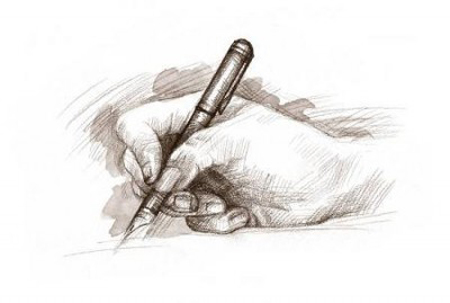

Health & Nutrition Desk
Health & Nutrition Desk The recent deaths of fashion designer Kate Spade and celebrity chef Anthony Bourdain have cast a spotlight on a jarring spike in suicides worldwide and on the importance of confronting the issue. More than 800,000 commit suicide annually around the world and suicide is listed as the second highest cause of death among people between the ages of 15 and 29, according to the World Health Organization (WHO). In the United States, 45,000 people took their own lives in 2016, a worrisome increase of nearly 30 percent since 1999. "It is difficult to explain, but this may be due in part to the opioid epidemic and economic factors that may have a stronger impact in the US than other developed countries because we do not have as comprehensive a protective health and social safety net as most European countries," said David Brent, a psychiatry professor at the University of Pittsburgh. Richard Friedman, a professor of clinical psychiatry, said in an op-ed piece in the New York Times that "the prevalence of suicide has fluctuated over time, often rising during periods of social strife" as was the case in 1932, during the Great Depression. Developing countries most affected Countries driven by conflict, such as Sri Lanka, are among the most affected, while South Korea and Japan are on the top of the list of industrialised countries dealing with high suicide rates. Someone who has experienced war, a natural disaster, violence or sexual abuse has a higher likelihood of committing suicide, according to the World Health Organization. In France, the suicide rate has plunged by 26 percent over the last 15 years to 10,000 a year, but remains one of the highest in Europe. While the recent deaths of Spade and Bourdain have cast the spotlight on suicide in developed countries, the WHO says that more than three quarters of suicides take place
গ্রুপপর্বে নিজেদের শেষ ম্যাচে সার্বিয়াকে
গ্রুপপর্বে নিজেদের শেষ ম্যাচে সার্বিয়াকে ২-০ গোলে হারিয়ে গ্রুপচ্যাম্পিয়ন হয়ে শেষ ষোলতে উঠেছে তারা। ব্রাজিলের হয়ে গোল পেয়েছেন পাউলিনহো ও থিয়াগো সিলভা। শেষ ষোলতে তাদের প্রতিপক্ষ ‘এফ’ গ্রুপের রানার্স আপ মেক্সিকো। এদিকে দিনের অন্য খেলায় কোস্টা রিকার সাথে ২-২ গোলে ড্র করে ‘ই’ গ্রুপের রানার্স আপ হয়েছে সুইজারল্যান্ড। শেষ ষোলতে তাদের প্রতিপক্ষ সুইডেন। বুধবার অঘটনের ঝড় উঠিয়ে রাশিয়ার বিশ্বকাপের গ্রুপ পর্ব থেকেই বর্তমান চ্যাম্পিয়ন জার্মানি বিদায় নিয়েছে। বিশ্বকাপের ইতিহাসের সফল দুইটি দলের একটি তারা। অন্য দল ব্রাজিল। তাই শঙ্কা কিছুটা জেগেছিল সার্বিয়া-ব্রাজিল ম্যাচ ঘিরেও। কিন্তু সব শঙ্কা উড়িয়ে শেষ ষোলতে উঠেছে নেইমাররা। সার্বিয়াকে হারিয়েছে তারা ২-০ গোল। এবারের আসরের ফেভারিট দল হিসেবেই রাশিয়া গিয়েছে তিতের শিষ্যরা। ফিফা র্যাঙ্কিংয়ে ২ নম্বরে থেকে। কিন্তু প্রথম ম্যাচে ড্র করে বড় ধাক্কা খায়। যদিও দ্বিতীয় ম্যাচে কোস্টা রিকাকে হারায় ২-০ গোলে। কিন্তু দলের সার্বিক পারফরম্যান্সে কিছুটা হতাশাই চোখে পড়েছিল। তাই ঘুরে দাঁড়ানোর ম্যাচে চিরচেনা আক্রমণাত্মক ভঙ্গি নিয়েই খেলে ব্রাজিল। ব্রাজিলকে প্রথম গোলটি পেতে অপেক্ষা করতে হয় ম্যাচের ৩৬ মিনিট পর্যন্ত। এসময় ফিলিপে কুতিনহো দারুণ একটি লঙ পাস দেন এগিয়ে থাকা পাউলিনহোর দিকে। আর বল পেয়ে দুই ডিফেন্ডারকে কাটিয়ে প্রতিপক্ষে গোলকিপারকে ফাঁকি দিয়ে গোল করেন পাউলিনহো। ১-০ গোলের ব্যবধান নিয়ে শেষ হয় প্রথমার্ধ। দ্বিতীয়ার্ধে ফিরে আক্রমণের ধার ধরে রাখে ব্রাজিল। ম্যাচের ৬৮ মিনিটে কর্নার কিক নেন নেইমার। সেই কিক থেকে হেডে দলের হয়ে দ্বিতীয় গোলটি করেন থিয়াগো সিলভা। তখনই মূলত ব্রাজিলের জয় নিশ্চিত হয়ে যায়। এ জয়ের ফলে টানা ১৩টি বিশ্বকাপের দ্বিতীয় রাউন্ডে উঠেছে ব্রাজিল। আর ব্রাজিলের হয়ে খেলা ১৮ ম্যাচে ১৯ গেলে অবদান রেখেছেন নেইমার। যারমধ্যে ১০টি গোল ও ৯টি অ্যাসিস্ট করেছেন তিনি। সিলভার গোলটি এসেছে নেইমারের অ্যাসিস্ট থেকে। গেল বিশ্বকাপেও নেইমারের অ্যাসিস্ট থেকেই গোল পেয়েছিলেন সিলভা। আর পাউলিনহোর প্রথম গোলে অ্যাসিস্ট ছিল কুতিনহোর। এর মধ্য দিয়ে বিশ্বকাপে ব্রাজিলের ৩টি গোলে (২ গোল ও ১ অ্যাসিস্ট) অবদান রাখলেন বার্সেলোনার এই তারকা।
শেষ মুহূর্তে হঠাৎই সব পাল্টে গেলো
শেষ মুহূর্তে হঠাৎই সব পাল্টে গেলো। আত্মঘাতী গোলে ২-২ ফলাফলে শেষ হলো সুইজারল্যান্ড-কোস্টারিকা ম্যাচ। ম্যাচে দারুণ আধিপত্য দেখিয়েছে কোস্টারিকা। ম্যাচের ৩১ মিনিটে প্রথম গোল হজম করে ৫৬ মিনিটে শোধ করে দেওয়ার পর অনেকটা সময় আক্রমণ শানিয়েছে তারা। তবে ম্যাচের ৮৮ মিনিটে গোল করে জয়ের খুব কাছে চলে যায় সুইজারল্যান্ড। সুইসদের হয়ে দ্বিতীয় গোলটি করেন দ্রিমিচ। কিন্তু ম্যাচে নাটক তখনও বাকি। ম্যাচের নির্ধারিত ৯০ মিনিট পার হওয়ার পর যখন শেষ বাঁশি বাজার অপেক্ষা ঠিক তখনই পেনাল্টি পায় কোস্টারিকা। অথচ এই পেনাল্টির আগে আরও একবার পেনাল্টির বাঁশি বাজান রেফারি। তবে ভিডিও রেফারির সহায়তায় তা বাতিল হয়ে যায়। খানিক বাদে আবারও পেনাল্টি পায় কোস্টারিকা। ব্রায়ান রুইজের শট ক্রসবারে লেগে ফিরে আসে, কিন্তু ফিরে আসা ওই বল সুইস গোলরক্ষক ইয়ান সোম্মার মাথায় লেগে গোল হয়ে যায়। নিশ্চিত পরাজয় থেকে রক্ষা পায় কোস্টারিকা। এই ম্যাচ ড্র করে গ্রুপ ‘ই’র রানার আপ হিসেবে শেষ ষোলোয় পা রাখলো সুইজারল্যান্ড। শেষ ষোলোর ম্যাচে ৩ জুলাই তাদের প্রতিপক্ষ গ্রুপ ‘এফ’র সেরা সুইডেন। আর গ্রুপ পর্ব থেকেই বিদায় নিলো কেইলর নাভাসের কোস্টারিকা।
Anaita Suraiya Haque: A shining star in fashion world
This May, Anaita Suraiya Haque, an astounding fashion designing student, showcased her amazing collection in Bangkok at a fashion show called In Touch. She is also working as an intern in Marks & Spencer. She will be finishing her degree from Florence, Italy in December this year. Today, she shares some insight into her lifestyle and work Tanvir Shams
Letter to Sabiha Jahan
Dear Sabiha Apu I am Rubina (pseudonym) from Khulna. I work in an NGO. I am extrovert. I have very good emotional control over myself. But suddenly I fell in love with one of my junior colleagues. Age is not the major problem here. The major problem is our religion. In fact he loves me too. I don't want anyone who has to sacrifice his religion, family for me. I want a peaceful relation. I want blessings from both sides. However my boyfriend is ready to change his religion for me. Should I discuss it with my parents? Reply: A very short answer to your question would be yes. You can definitely share and discuss with you parents and dear ones. Often our near and dear ones can support us to have a clear and conclusive condition of our life. And parents are more than that obviously.
Anarchy and corruption in

Anarchy and corruption in education system: Who will bell the catNeymar saw his successful penalty appeal overturned after review by the video assistant referee, before Philippe Coutinho finally broke the deadlock in stoppage time, with the Paris Saint-Germain forward scoring another to wrap up a first victory for Brazil at the World Cup. Having been given another dose of rough treatment by the opposition – just as in the opening game against Switzerland – Neymar came in for criticism in Brazil after breaking down in tears following the full-time whistle. Tite, though, insisted it cannot always be about Neymar and knows it will take a collective effort to secure the result needed at the Spartak Stadium on Wednesday to book a place in the last 16, the Guardian reports.
ROUND:37
ID:1244255
E-mail:juitrishadewan@gmail.com
TSP:CCLS//J2EE_ PROGRAMMAR